Students
Bachelor thesis proposals (Laurea Triennale in Ingegneria Elettronica)
Proposte di tesi per la Laurea Triennale in Ingegneria Elettronica. Ogni proposta può essere modulata in base al tempo richiesto e disponibile. Per discuterne, vedi How to apply.
Proposta di tesi triennaleCaratterizzazione metrologica di un sistema integrato eye-tracker e visore di realtà virtuale per la misura del diametro pupillare e della stabilità dello sguardo
Stabilisce quanto sono affidabili le misure di diametro pupillare e di direzione dello sguardo fornite da un eye-tracker integrato in un visore VR, al variare dello stimolo luminoso. Il lavoro è diviso in tre blocchi successivi: la misura della luce che il visore invia realmente all’occhio (range dinamico, sensibilità, uniformità e stabilità), la caratterizzazione dell’eye-tracker a diversi livelli di illuminazione e angoli di fissazione e la validazione della misura del diametro pupillare rispetto a un pupillometro di riferimento.
Proposta di tesi triennaleCaratterizzazione dello stimolo luminoso di un pupillometro da laboratorio: intensità, timing e profilo del fascio
Misura le caratteristiche reali dello stimolo luminoso emesso da un prototipo di pupillometro realizzato in laboratorio. Le attività previste riguardano l’intensità (linearità e ripetibilità), il timing di generazione (ritardo tra comando ed emissione, durata dell’impulso, tempi di salita e discesa), la forma del fascio sul piano dell’occhio, lo spettro della sorgente e la stabilità dell’emissione nel tempo. Il risultato è una scheda di caratterizzazione dello stimolo, con le incertezze di misura.
Proposta di tesi triennaleCaratterizzazione di un sistema ibrido ToF-RGB per la misura di distanze e la validazione di algoritmi di depth estimation
Caratterizza un sistema che combina un sensore a tempo di volo (ToF) e una telecamera RGB per misurare la distanza degli oggetti nella scena. Il lavoro è diviso in tre blocchi successivi: il sensore ToF da solo in condizioni controllate (accuratezza, ripetibilità, campo di vista, sensibilità alla luce esterna), la calibrazione geometrica tra ToF e telecamera e la valutazione di un algoritmo di machine learning che stima la profondità dall’immagine RGB rispetto a un ground truth.
Master thesis proposals
Proposte di tesi per la Laurea Magistrale. Ogni proposta può essere modulata in base agli interessi e al tempo disponibile. Per discuterne, vedi How to apply.
Proposta di tesi magistrale · Color PerceptionFrom Color Perception to Silent Substitution Pupillometry: An Individualized Calibration Approach
Ognuno di noi percepisce i colori in modo leggermente diverso, e queste differenze influenzano la risposta agli stimoli luminosi. Utilizzando un pupillometro custom già realizzato, con ottica maxwelliana, quattro sorgenti LED a diverse lunghezze d’onda e una telecamera a infrarossi, il lavoro sviluppa un protocollo di calibrazione soggettiva basato sul confronto di stimoli cromatici e lo usa per definire stimoli di silent substitution personalizzati, così da isolare il contributo di specifiche classi di fotorecettori alla risposta pupillare. Il protocollo sarà applicato ad almeno 10 volontari, valutando ripetibilità delle misure e variabilità interindividuale. Richiede basi di elettronica e ottica (non è prevista progettazione hardware), MATLAB o Python e interesse per la fisiologia del sistema visivo.
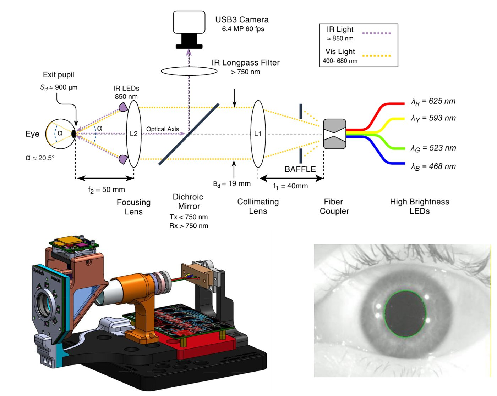
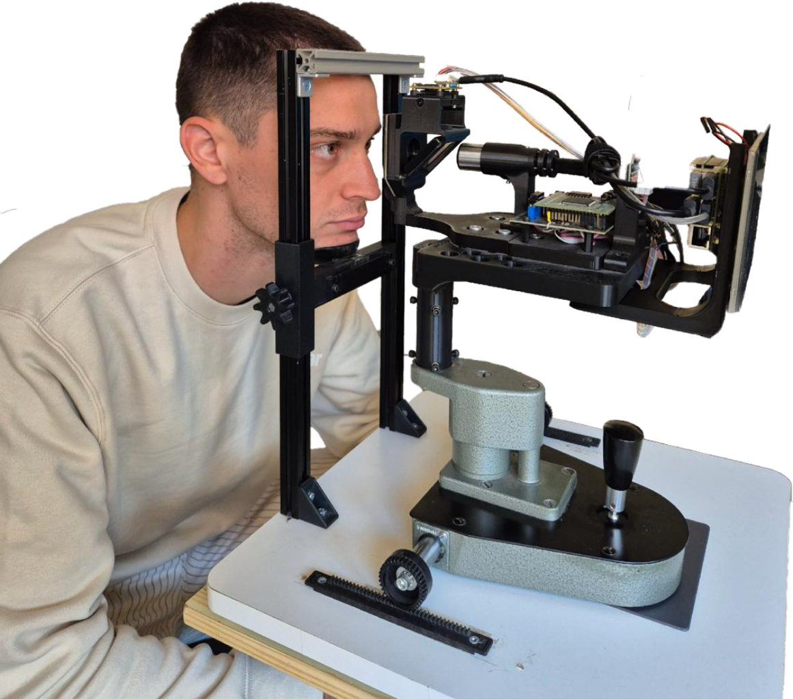
Proposta di tesi magistrale · NIR Spectroscopy BraceletOptical Myography for Human-Machine Interfaces: From Hand Gestures to Robotic Hand Control
Le contrazioni muscolari e i movimenti dei tendini modificano la propagazione della luce nei tessuti dell’avambraccio: la miografia ottica sfrutta queste variazioni per riconoscere le gesture della mano. Partendo da un bracciale già realizzato, con sorgenti e sensori nel vicino infrarosso integrati in un supporto flessibile stampato in 3D, la tesi studia l’interazione luce-tessuto e l’effetto di lunghezze d’onda e geometria di misura, valuta sorgenti e rivelatori per migliorare la qualità del segnale e sviluppa in Python l’acquisizione e gli algoritmi di riconoscimento delle gesture. Il sistema sarà valutato rispetto a postura, riposizionamento e differenze individuali e integrato con il controllo di una mano robotica.
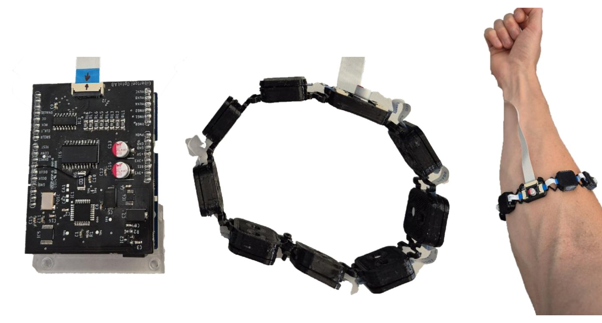
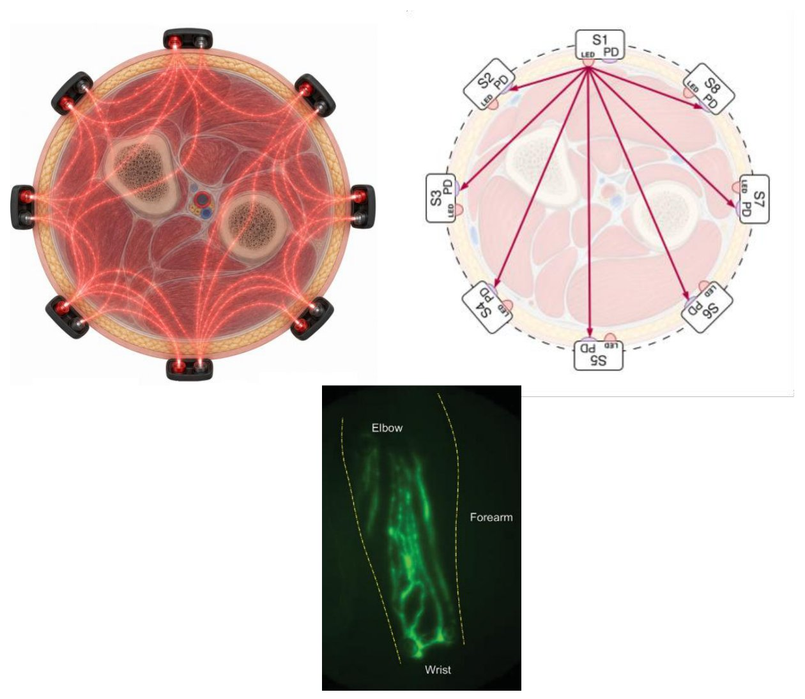
Proposta di tesi magistrale · Angle Closure GlaucomaStructured-Light Ocular Imaging: Anterior Chamber Depth Reconstruction for Glaucoma Screening
La profondità della camera anteriore dell’occhio (Anterior Chamber Depth, ACD) e la sua conformazione periferica sono parametri rilevanti per valutare il rischio di glaucoma da chiusura d’angolo. Il progetto sviluppa algoritmi in Python per elaborare un database di immagini cliniche a luce strutturata multilinea, acquisito su circa 150 pazienti, combinando image processing, machine learning e modellazione della rifrazione per ricostruire il profilo di profondità della camera anteriore. Accuratezza e ripetibilità saranno valutate rispetto ai dati clinici e OCT disponibili.
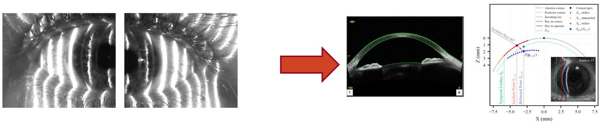
Proposta di tesi magistrale · Angle Closure GlaucomaStructured Light for Glaucoma Screening: Development and Characterization of a DLP-Based Ocular Imaging System
Evoluzione di un dispositivo già realizzato per la misura della profondità della camera anteriore, basato su un proiettore DLP con acquisizione sincronizzata delle immagini. La tesi caratterizza la qualità dei pattern proiettati, l’illuminazione e la risoluzione del sistema, ottimizza geometria ottica e supporti meccanici per compattezza, allineamento e stabilità, e sviluppa il controllo del proiettore e l’acquisizione tramite Raspberry Pi e Python. Diversi pattern di luce strutturata saranno confrontati verificando sperimentalmente le prestazioni del dispositivo.
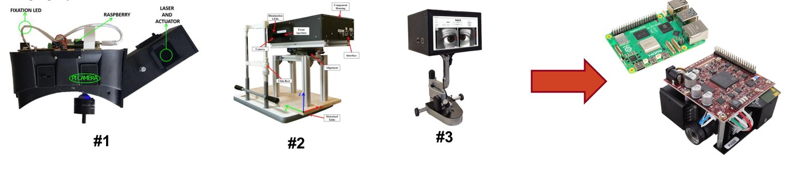
Proposta di tesi magistrale · Flexible Sensors for Wearable ApplicationDesign e implementazione di circuiti stampati flessibili (FPCB) per il monitoraggio biomedicale wireless
Il gruppo ha realizzato un sensore di pH ottico completamente flessibile, in cui il substrato in poliimmide fa anche da filtro ottico e l’elettronica di lettura è integrata direttamente sul circuito flessibile. La tesi estende questa piattaforma verso un patch indossabile multi-sensore con le tecniche dell’elettronica stampata, lavorando, in base agli interessi, su una o più attività: nuovi sensori ottici fluorescenti per glucosio e altri analiti, strain sensor in PEDOT:PSS per movimento e respiro, elettrodi stampati per misure elettrochimiche e di biopotenziali, elettronica on-flex con trasmissione wireless a basso consumo e caratterizzazione con test di piegatura automatizzati, anche in sudore artificiale. Il lavoro si svolge in un team di ingegneri, biologi e chimici, con stampante per elettronica flessibile e banchi di misura automatizzati.
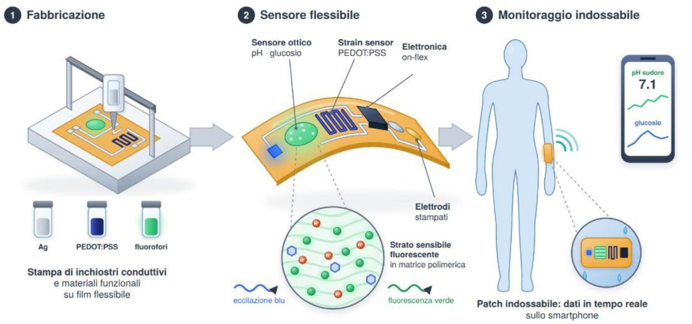
Proposta di tesi magistrale · Real-time monitoring in blood dialysisReal time monitoring technologies during blood dialysis
La dialisi rimuove bene l’urea ma fatica con le tossine uremiche legate alle proteine, come il p-cresil solfato (pCS), oggi misurabili solo in laboratorio con LC-MS/MS a trattamento concluso. Insieme all’Unità di Nefrologia, Dialisi e Trapianto del Policlinico di Modena è stato sviluppato un prototipo opto-elettronico (LED UV, fotodiodo, lock-in) che rileva il pCS nel dialisato esausto, senza contatto con il sangue. La tesi lo porta dal banco alla sala dialisi: progettazione della cella di flusso ottica e del circuito fluidico, ottimizzazione dell’elettronica combinando assorbimento e fluorescenza, caratterizzazione metrologica, modelli di calibrazione anche data-driven e, previa approvazione del Comitato Etico, confronto con LC-MS/MS durante sedute reali di emodiafiltrazione. Parte delle attività si svolge in ospedale.
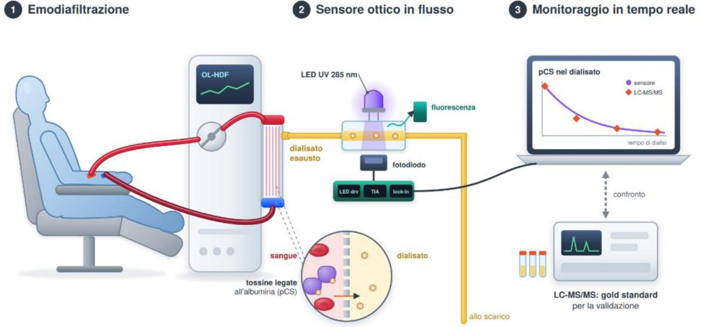
Proposta di tesi magistrale · Eye Health MonitoringTechnologies for Eye Health Monitoring
La pressione intraoculare è l’unico fattore di rischio modificabile del glaucoma, ma oggi si misura solo durante le visite. Con oculisti e ingegneri di più università si sta sviluppando un sensore LC passivo, ultrasottile e senza batteria, da alloggiare nella cornea e leggere via wireless con occhiali smart. La tesi comprende progettazione e simulazione EM/FEM del risonatore LC, prototipi su substrati flessibili e biocompatibili, elettronica di interrogazione e ottimizzazione dell’accoppiamento induttivo, e un banco di prova con occhio artificiale per la calibrazione tra 10 e 50 mmHg.
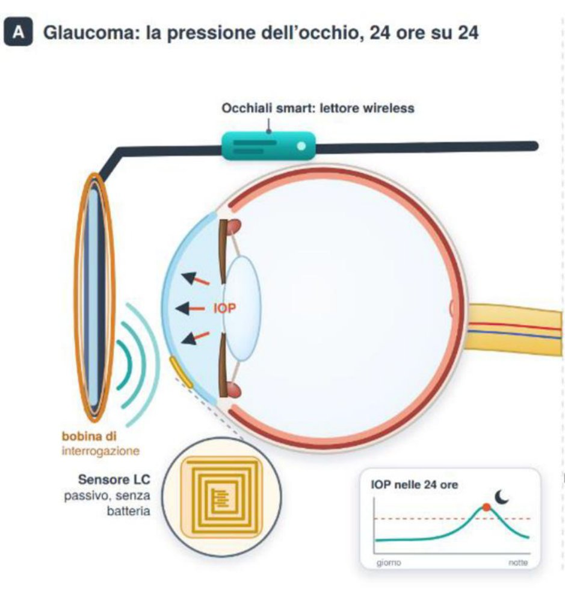
Proposta di tesi magistrale · Vision RestorationTechnologies for Vision Restoration
La vision restoration richiede dispositivi indossabili capaci di proiettare sulla retina immagini luminose e precise. Per un dispositivo basato su microdisplay in fase di sviluppo, la tesi affronta l’elettronica di controllo, che deve essere miniaturizzata, a basso consumo e con minima dissipazione termica perché lavora vicino all’occhio: architettura (interfaccia display, alimentazioni, dati), prototipo su PCB o FPGA e firmware, misure di consumi, temperatura, latenza e qualità dell’immagine, fino alle specifiche per un futuro chip dedicato.
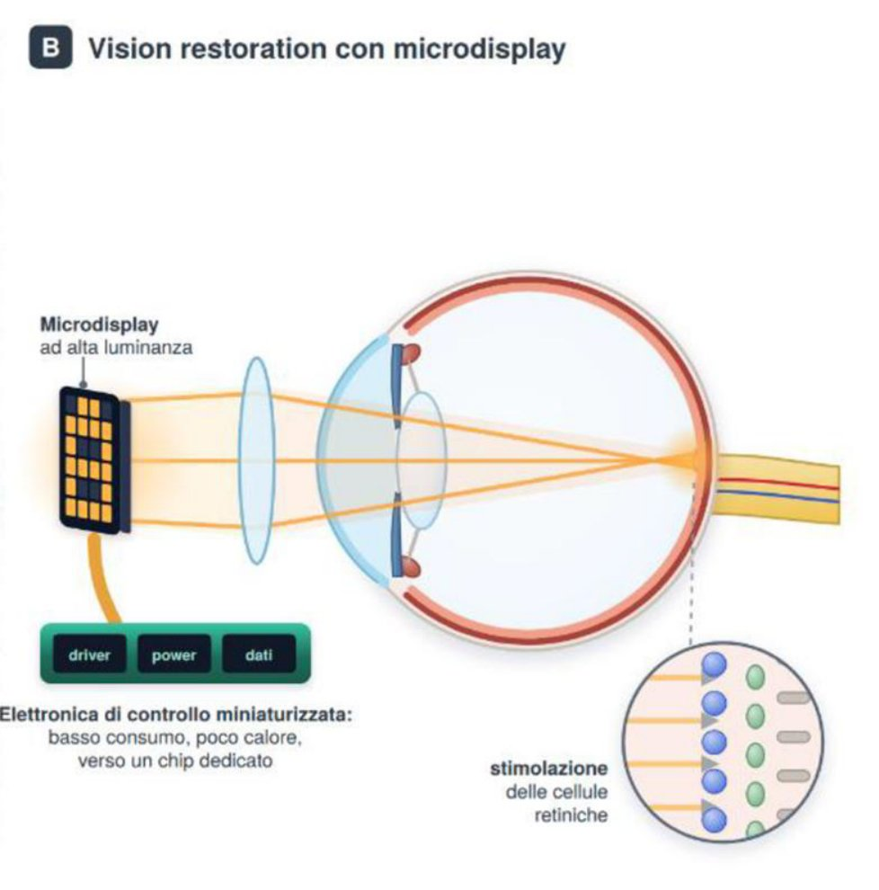
Proposta di tesi magistrale · StrabismoRiabilitazione sensoriale gaze-contingent dello strabismo in ambienti visivi naturali virtuali
Le tecniche di riabilitazione sensoriale gaze-contingent sfruttano la conoscenza in tempo reale della direzione dello sguardo per modulare gli stimoli visivi, compensando o correggendo il disallineamento percettivo tipico dello strabismo. Inserita in un progetto già in corso con visore Pico 4 ed eye-tracker Pupil Neon, la tesi sviluppa stimoli visivi naturali in realtà virtuale (Unity 3D) che affianchino o sostituiscano gli stimoli sintetici tradizionali, per aumentare il coinvolgimento del paziente e la trasferibilità della riabilitazione alla vita quotidiana. Le attività includono il rendering gaze-dependent in tempo reale, la misura e ottimizzazione della latenza motion-to-photon e la raccolta di dati da soggetti sani e strabici.
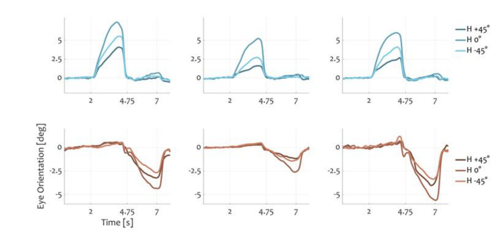
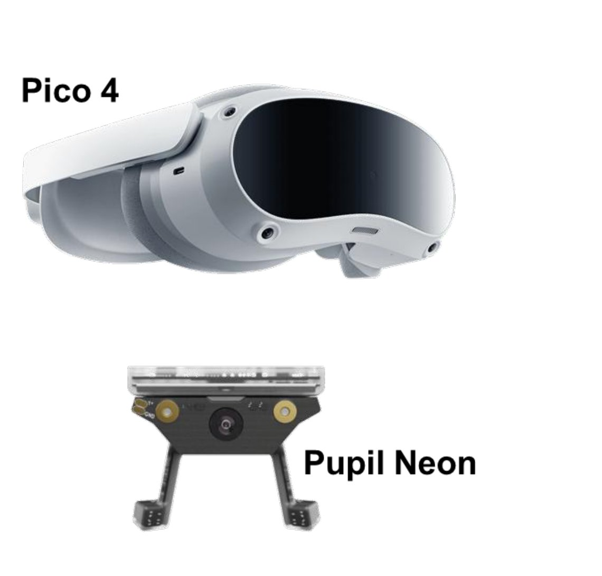
Proposta di tesi magistrale · Sensor Fusion for Eye TrackingSistema ibrido Electro-OculoGraphy e Pupil Tracking per il tracciamento del movimento oculare
Riprogettazione di un sistema di eye-tracking ibrido che combina elettro-oculografia (EOG) e analisi video, superando i limiti emersi in lavori precedenti. Si parte da una revisione critica dell’hardware, con la selezione e il test di nuove schede di acquisizione ed elettrodi (tipologia, materiale, posizionamento) per migliorare rumore, artefatti e banda del segnale EOG; in parallelo la procedura di calibrazione viene riprogettata da zero, sfruttando la fusione dei dati EOG e video. Il lavoro comprende la caratterizzazione dei componenti, sessioni di acquisizione controllate, algoritmi di fusione sensoriale e la valutazione di accuratezza, precisione e latenza rispetto alle soluzioni precedenti.
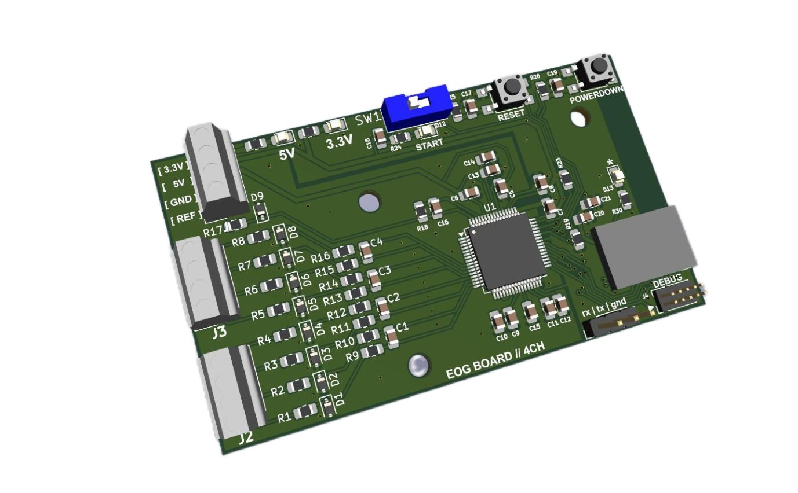
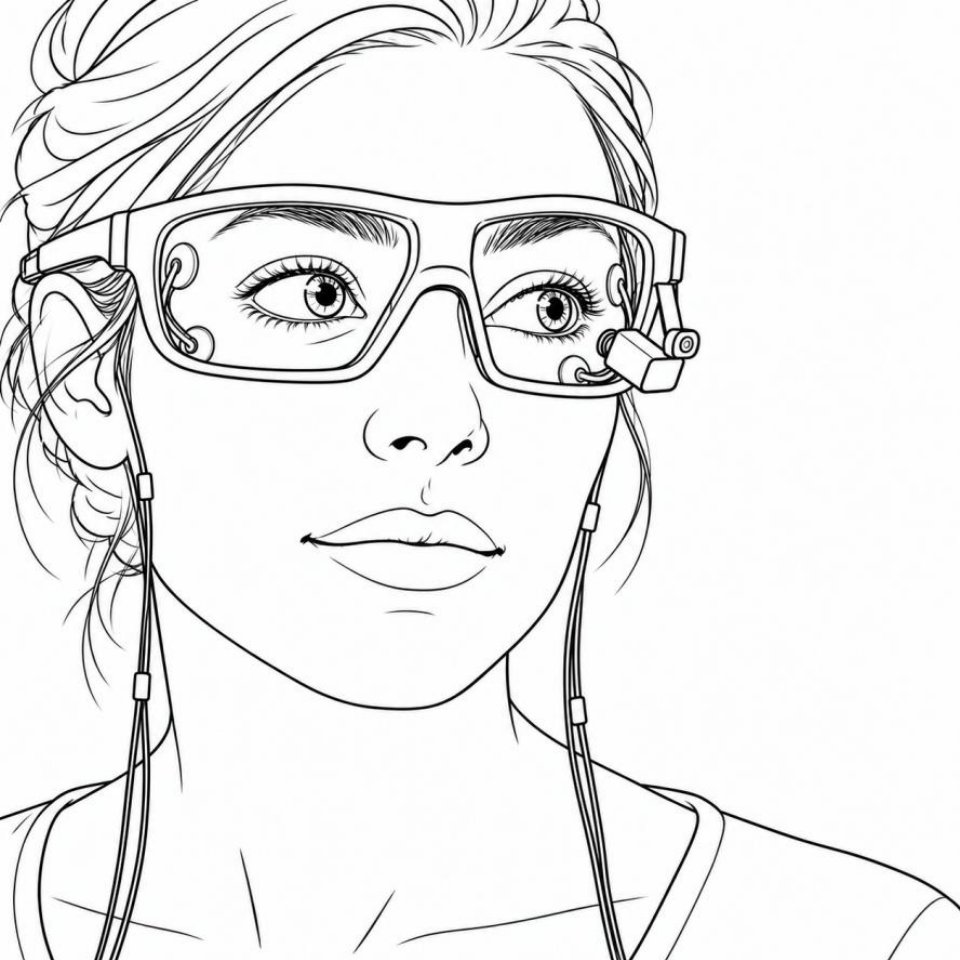
Proposta di tesi magistrale · Eye Movement Analysis ToolboxSviluppo di Risorse per l'Analisi dei Movimenti Oculari
La EMA Toolbox (Eye Movement Analysis Toolbox) è oggi un insieme monolitico di funzioni MATLAB per l’analisi dei movimenti oculari. La tesi la ristruttura in moduli indipendenti (acquisizione, preprocessing, fissazioni, saccadi, visualizzazione, export), mantenendola in MATLAB e traducendola in Python per integrarla con l’ecosistema scientifico open-source (NumPy, SciPy, Pandas, MNE). Il nuovo framework sarà validato con dati acquisiti tramite gli eye-tracker Pupil Core e Pupil Neon e con dataset pubblici di letteratura.
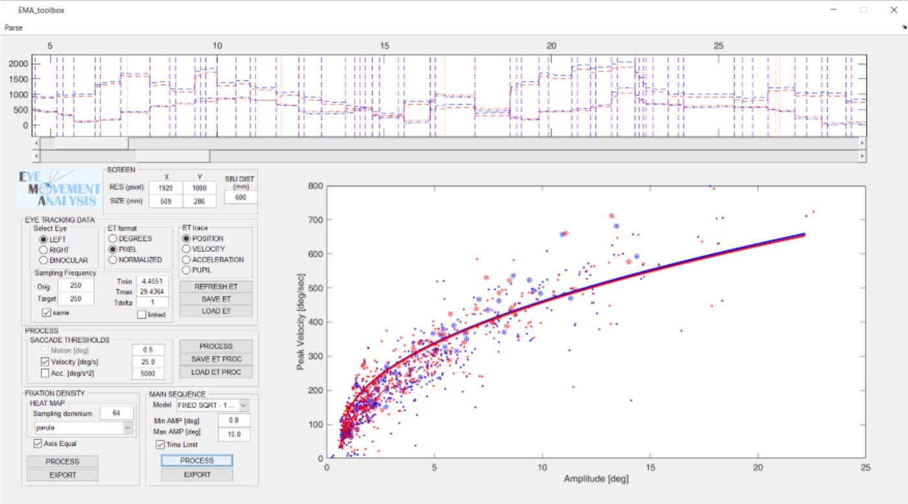
Proposta di tesi magistrale · Bio-markers dai movimenti oculariEstrazione di bio-markers da dati di movimenti oculari in pazienti
Analisi di un database di movimenti oculari messo a disposizione dall’Istituto Italiano di Tecnologia (IIT), per individuare possibili biomarcatori associati a patologie neurologiche, con particolare riferimento alla sclerosi multipla. I dati dei pazienti saranno confrontati con le performance oculomotorie di soggetti sani, estraendo caratteristiche quantitative dei movimenti oculari e valutandone la capacità di distinguere i due gruppi con metodi statistici e di apprendimento automatico. Richiede buona conoscenza di MATLAB e nozioni di analisi di fissazioni, saccadi e blink.
Proposta di tesi magistrale · Classificazione di attivitàImplementazione di un classificatore di attività in ambienti naturali
Lo sviluppo della miopia può essere influenzato, oltre che da fattori genetici, dalle condizioni ambientali e dalle attività quotidiane. La tesi utilizza il dispositivo MYTA-TECH, sviluppato presso OptoLAB, per acquisire dati durante diverse attività indoor e outdoor, e sviluppa in MATLAB un metodo per classificarli secondo il contesto: ambiente interno o esterno, illuminazione naturale o artificiale, visione da vicino o da lontano, attività sportiva o sedentaria, presenza di display. Il lavoro comprende la definizione delle categorie, la partecipazione a sessioni di raccolta dati e l’implementazione e valutazione del classificatore.
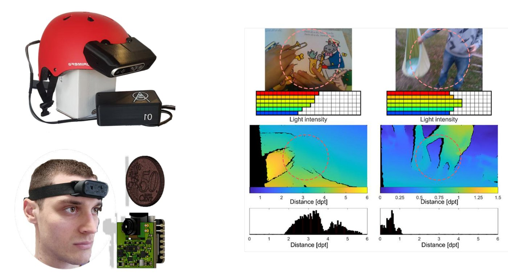
Recent theses
Master's thesis · Electronic Engineering · December 2026VR-Based Strabismus Assessment: Design, Calibration, and Validation of an Automated Cover-Uncover Test
Strabismus affects an estimated 2–4% of the population and is a leading cause of amblyopia, diplopia and reduced stereopsis, yet its diagnosis still relies on the alternating and prism cover tests, whose outcome depends on the examiner and is poorly repeatable. This thesis develops a standalone virtual-reality system for objective strabismus assessment on affordable commercial hardware, a Pico 4 Ultra Enterprise headset with a Pupil Neon eye tracker, adding a subject-specific calibration performed monocularly, since binocular calibration assumes both eyes fixate the target, which manifest strabismus violates. An automated cover-uncover test replaces the physical occluder with software occlusion of each eye’s display, separating the total ocular deviation into its manifest and latent components, and repeats the sequence three times per session to assess repeatability. Preliminary results on ten healthy participants show the calibration bringing binocular gaze error to sub-degree levels in most subjects, with interpupillary-distance misconfiguration emerging as the most critical factor for accuracy.
Bachelor's thesis · Electronic Engineering · October 2026Analogue Front-End for Electrooculographic (EOG) Acquisition
Electrooculography (EOG) studies the electrical signals generated by eye movements, of interest both for the diagnostic information these signals give on ocular disorders and for gaze-driven human-machine interfaces. Compared with camera-based eye tracking, EOG needs little computing power but produces very small signals — tens to hundreds of microvolts — that are easily disturbed by facial-muscle activity; the devices available today are either costly modular biosignal systems tied to proprietary software, or low-cost boards limited to a single channel, since most dedicated hardware targets ECG or EEG rather than EOG. This thesis develops a low-cost, 4-channel differential acquisition system designed specifically for EOG, built around Texas Instruments’ ADS1299 24-bit biosignal ADC, which digitizes the raw signal for later digital filtering and offers a programmable-gain amplifier and lead-off detection to check electrode-skin contact, while keeping power consumption and size low without sacrificing signal quality. It also investigates electrode placement and the choice of differential pairs on the face, testing alternative configurations against the standard EOG layout to reduce user discomfort and the signal degradation that comes with fatigue.
Master's thesis · Electronic Engineering · April 2026Design and Implementation of a Low-Cost Wearable Eye Tracker: A Sensor Fusion Approach Combining Electro-OculoGraphy and Pupil Tracking
Video-oculography is accurate but computationally heavy and slow for real-time use, while electro-oculography (EOG) offers minimal latency and computing cost but suffers from low absolute accuracy, baseline drift and non-linearity at large eccentricities. This thesis designs a low-cost hybrid eye tracker that addresses these limits through mechanical design and sensor fusion: EOG is acquired with a modified AD8232 analogue front-end, and electrodes integrated into a custom-moulded thermoplastic mask reduce operator-dependent placement variability. An OV2660 camera in the same wearable tracks the pupil as an absolute spatial reference, and a saccade-triggered state machine running in MATLAB with Psychtoolbox uses the EOG to follow rapid saccades while the optical data automatically resets the EOG baseline, cancelling accumulated drift without explicit recalibration. The result is a stable, low-cost interface suited to assistive human-computer interaction.
Bachelor's thesis · Electronic Engineering · April 2026Sistema a basso costo per l'analisi spettrale di fluidi
Design, construction and methodological validation of a portable, low-cost spectrometric system for the optical analysis of liquid samples inside transparent tubing, for decentralised diagnostics and food quality control. The prototype combines an 8-channel AS7341 visible multispectral sensor, a broadband LED source and an internal monitoring photodiode under an ESP32-S3 microcontroller. The work characterises the temporal stability of the source, calibrates the internal monitor, and develops a normalisation procedure that makes the measurement independent of source drift and sensor configuration. Tests on scattering matrices dosed with dyes at different concentrations assess ambient-light rejection and the ability to discriminate spectral variations in transmission, alongside an analytical estimate of component cost.
Master's thesis · Electronic Engineering · October 2025Development and Testing of a Lightweight, All-Day Head-Mounted Wearable: Investigating the Visual Environment in Children for Myopia Risk Assessment
Development of MYRA-TECH (MYopia Risk Assessment TECHnologies), a lightweight head-mounted system for recording a child’s visual environment across a full day, in support of research into the environmental risk factors behind myopia. The device measures object distance, by combining monocular depth estimation from an OV2640 camera with a VL53L5CX 8×8 time-of-flight sensor, and ambient illuminance through an AS7341 spectral sensor, while an MPU6050 inertial unit supports machine-learning activity recognition that distinguishes reading, screen use and outdoor play. Built around an ESP32-S3 for full-day acquisition, the design keeps the electronics head-mounted and aligned with the child’s eyes, with a single cable to a small power bank. Initial tests with five adults and one child assessed performance, comfort and data quality.
Join us
OptoLAB is open to motivated students and researchers interested in optical measurement, biomedical instrumentation, embedded systems and computational imaging. We host bachelor’s and master’s theses and internships throughout the year, and we welcome enquiries from prospective PhD candidates and research fellows. Every project connects to a research direction the laboratory is actively working on.
What we offer
- Hands-on work across the full measurement chain: optics, electronics, embedded acquisition and data analysis.
- Supervision from a team with an active publication record in instrumentation, biomedical optics and sensing.
- The possibility of contributing to open, publishable research outputs.
How to apply
- Look through our Publications to see what the laboratory currently works on.
- Email Prof. Luigi Rovati with a short note on your background, the level you are applying at and the area you are interested in.
- We’ll get back to you to discuss available topics and next steps.
Get in touch
Ready to start?
Tell us what you’d like to work on, we’ll take it from there.